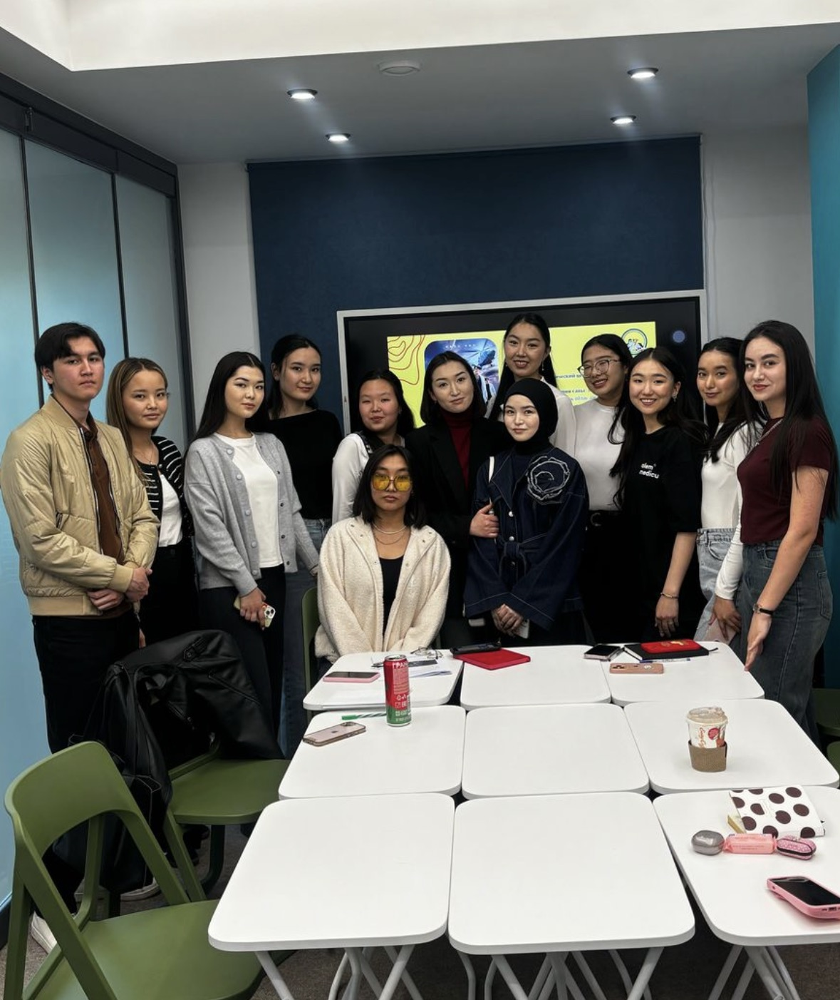
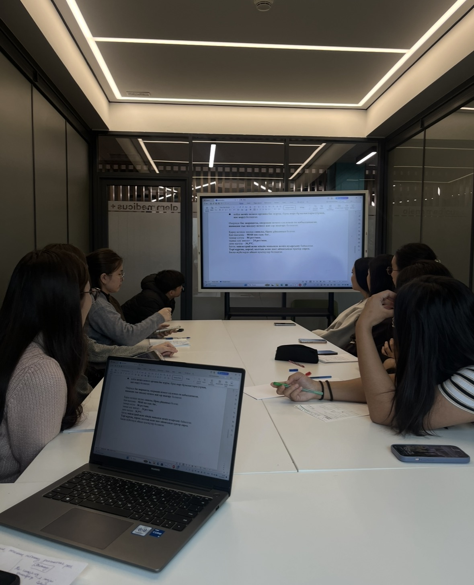
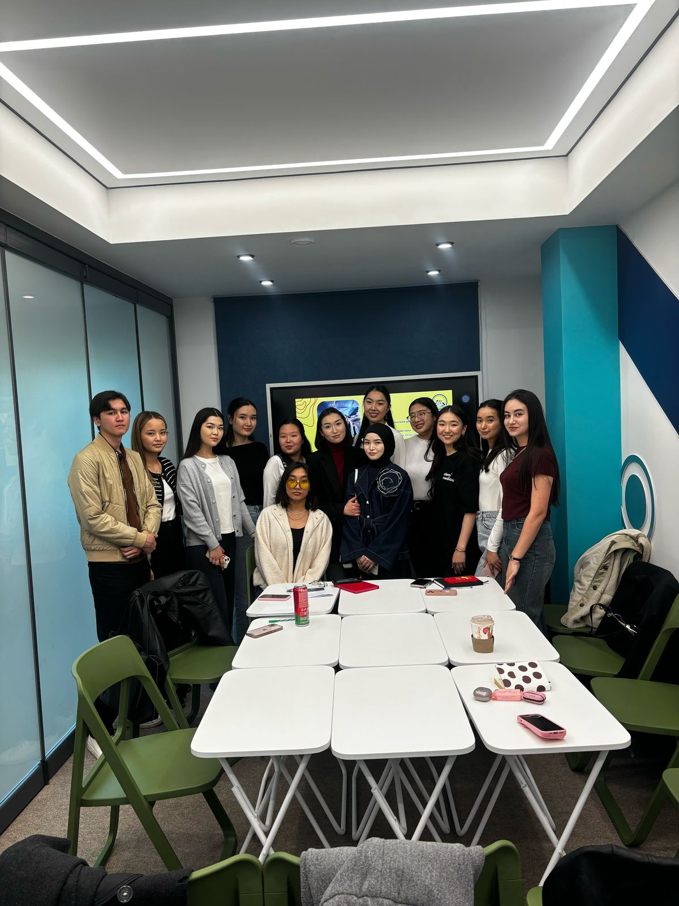
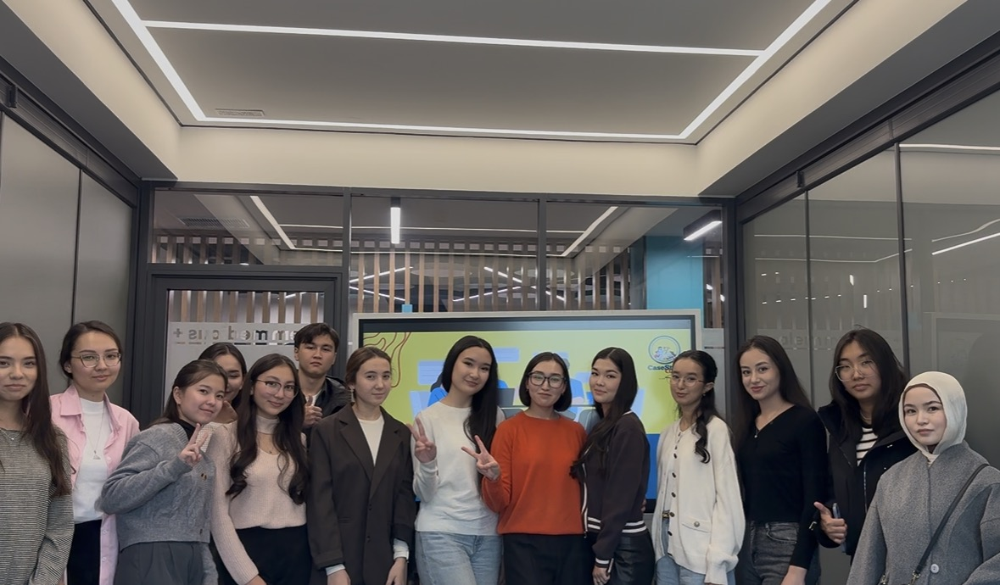
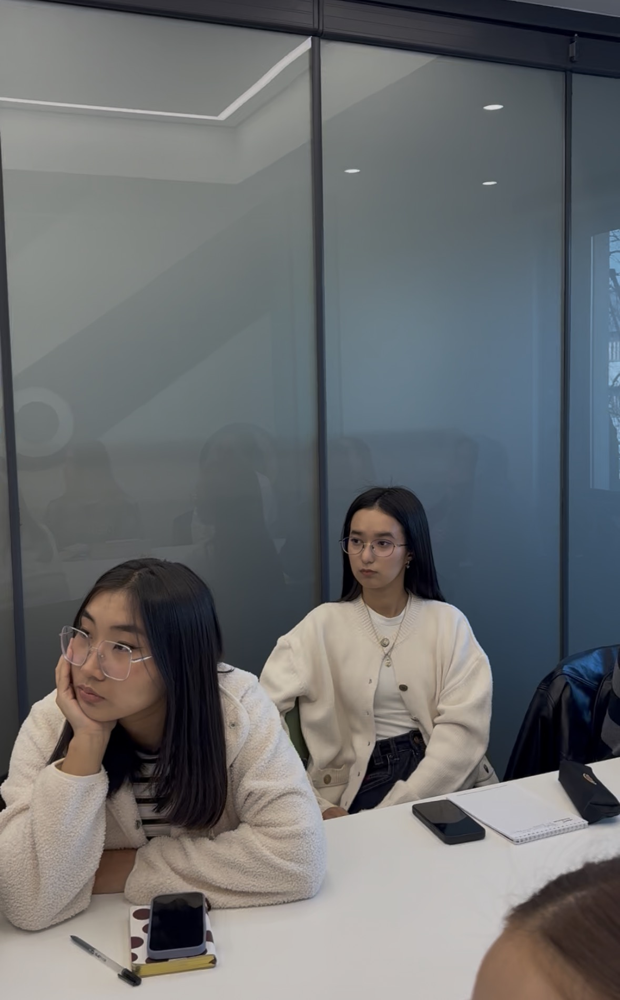
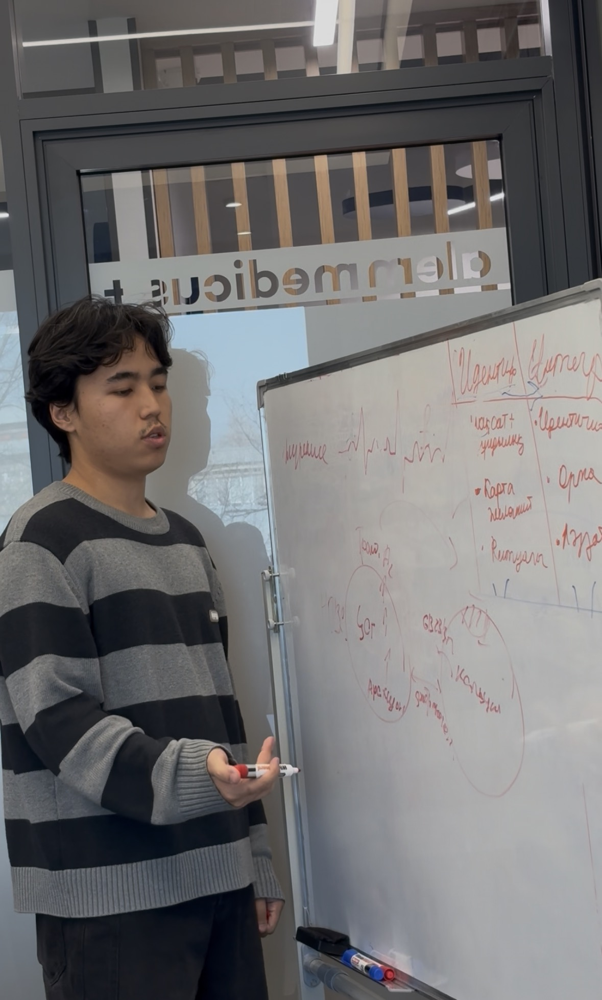
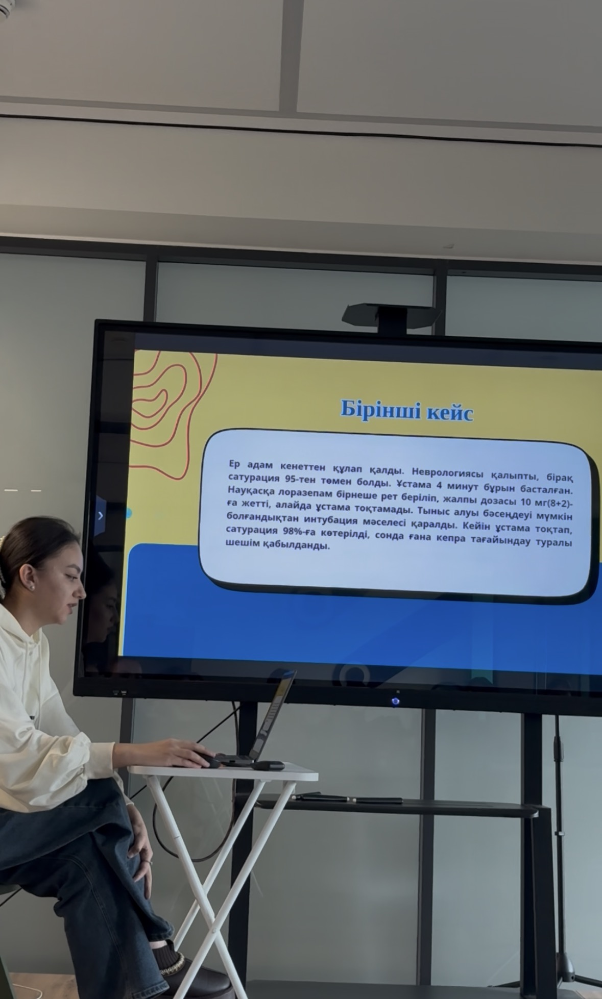

CaseStudy Club by Alem Medicus

«Медициналық сериалдар. Нақты клиникалық кейстер. Шынайы талқылау.»
CaseStudy Club — бұл студенттер алдын ала таңдалған медициналық сериалдың бір эпизодын қарап келіп, кейін клиникалық жағдайларды бірге талдайтын, диагностика, патогенез және ем тактикасын талқылайтын білім беру клубы.
CaseStudy Club — бұл студенттер алдын ала таңдалған медициналық сериалдың бір эпизодын қарап келіп, кейін клиникалық жағдайларды бірге талдайтын, диагностика, патогенез және ем тактикасын талқылайтын білім беру клубы.
Клуб туралы


CaseStudy Club — студент-медиктерге арналған тәуелсіз білім беру алаңы.
Біз қауіпсіз, қолайлы орта құрып, әр студентке сұрақ қойып, ой бөлісіп, кәсіби тұрғыда дамуға мүмкіндік береміз.
Құрылған күні: 19.04.2025
Құрылған күні: 19.04.2025
Мақсатымыз

- Клиникалық ойлауды дамыту
- Қауіпсіз және қолайлы білім ортасын құру
- Аргументацияны және логиканы жетілдіру
- Медициналық сериалдар арқылы оқытуды қызықты ету
- Болашақ дәрігерлік көзқарасты қазірден бекіте алу
Кездесулер

- 📺 Сериал бойынша клиникалық кейстерді талдау
- 🩺 Медициналық мини-дискуссиялар
- 🎭 «Құпия қонақ» форматы
- 💬 Коммуникация дағдыларын дамыту
- 📑 Эмпатияны жетілдіру мақсатында дәрігер/пациент рөлдерін игеру
Біздің құндылықтар:

- ашықтық
- қолдау
- қателесуден қорықпау
- кәсіби даму
Медициналық бағыттар


- Қалыпты анатомия және физиология
- Патологиялық физиология
- Фармакология негіздері
- Ішкі аурулар пропедевтикасы
- Алғашқы көмек ережелері
- Жалпы хирургия негіздері
- Мүмкіндік болса, медициналық бөлек циклдер (травматология, кардиология, гематология және т.б)
Талқыланған кейстер саны: 90 астам
Кездесу қалай өтеді?
- A. Студенттерге белгілі бір кино, телесериал жайында WhatsApp желісі арқылы алдын ала ақпарат беріледі. Сол арқылы студент белгілі бір сюжеттік бейнені клуб сағатының алдында тамашалап келуі тиіс.
- B. Клуб сағатында студенттер бірінші пікір алмасу жүргізіп, негізгі деп санаған жағдаяттық мәселелерді ортаға салады.
- C. Болған оқиғадағы диагноз негізінде қалыпты анатомия, патологиялық физиология, ішкі аурулар пропедевтикасы, фармакология бағытында негізгі тақырыптар талқыға түседі.
- D. Кездесуді бекіту мақсатында медициналық идеологияда арнайы ойындар, сауалнамалар жүргізіледі.
Алға қойылған жоспарлар:
- Студенттермен жеке талдауларды видеоға түсіріп, әлеуметтік желіде жеке бренд қалыптастыру
- Қонаққа дәрігерлерді шақырып, тікелей тәжірибе жинау
- Кейс кітапшысын бірге жазу (кейін қолдануға болатын жинақ)
- Студенттерге арналған мини-конференция/олимпиада ұйымдастыру
Серіктестік
CaseStudy Club өзінің білім беру бастамаларын жүзеге асыру барысында Alem Medicus ұйымының қолдауына сүйенеді.
Alem Medicus — медициналық білімді дамытуға, студенттердің кәсіби қалыптасуына және жаңа форматтағы оқу тәжірибесін қалыптастыруға бағытталған қоғамдық бірлестік.
Біздің серіктестігіміздің мақсаты — студенттерге қолжетімді, заманауи және интерактив оқу кеңістігін құру.
Alem Medicus клуб жұмысына контенттік, ұйымдастырушылық және идеялық деңгейде қолдау көрсетіп, білім беру сапасын арттыруға көмектеседі.